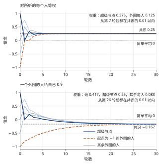

第 13 章 意见分歧、说服与有偏的信念
Tetlock（2011）研究投资者是否对旧闻（stale news）作出反应，旧闻即重复已经见报内容的报道；他用的是 1984 年至 2004 年关于标准普尔 500 指数公司的公开财经新闻（工作论文版；10.7 节）。他发现，市场对旧传闻（stale stories）的反应在下一周部分反转，而对含有较多新信息的报道的反应，反转的程度小得多，甚至还会延续（工作论文版）。对于前五天内另有一篇报道的公司消息，经风险调整后，第 2 至第 5 个交易日的反转累计为 27 个基点，一个基点是百分之一个百分点（工作论文版的数字）。
他从心理学出发。在他引用的研究里，一个人对一句含糊的话，遇到的次数越多，就越相信，这叫真相错觉效应（truth effect），不论重复本身有没有带来新的信息（据 Tetlock 的转述；工作论文版）。他在附录里给出的模型，是他提出的一种可能的机制，它假设非理性投资者对自己信号的感知把旧信息和新信息混在一起，并引用了 DeMarzo、Vayanos 与 Zwiebel（工作论文版）。
在那个模型里，人人看到相同的信号，投资者的差别在于怎样处理它们（10.7 节）。第 5 章的根模型（root model）假设贝叶斯更新（Bayesian updating）、共同先验（common prior）、贝叶斯法则（Bayes’ rule）和一条永不改变的处理规则（processing rule）；5.8 节的表 5.1 把这条默认和其他默认并排列出，本章去掉它。本章还去掉三处：13.3 节的外生交易对手（exogenous counterparty），因为有偏的信念无需外来的噪声交易者（noise trader）也能带来交易；13.6.2 节和 13.9 节的单一外生事实（single exogenous fact），前者里平均把几个议题连成一个，后者里意见没有可学的事实；还有 13.6.3 节里同一条信息沿几条路径回来的情形，这时去掉的是均匀混合（homogeneous mixing）中关于信息源的那一部分（本书的判断；表 5.1）。1
13.1 复制与汇集
根模型把一条消息从一个信息源传开：所有知情者看到的是同一个信号，知道的人越多，其余的人听到得越快（5.2 节）。这里每个人一开始就有一个关于同一事实的、属于自己的信号。在 DeMarzo、Vayanos 与 Zwiebel（2003）的模型里，每个起始信号是这个事实加一个均值为零、人与人之间相互独立的正态误差（工作论文版）。Acemoglu 与 Ozdaglar（2011）在综述里问，社会学习（social learning）能否有效地聚合（aggregation）这类关于某个潜在状态的分散信息。
度量随问题而变（本书的判断）。这里不问有多少人听说了。这里问每个人的起始信息在信念或价格最终落脚的地方占多少，也就是它的影响力权重（influence weight）。在根模型的价格里，按 5.3 节的条件，财富决定影响力权重；在本章的平均模型里，由网络决定（13.6 节）。
Acemoglu 与 Ozdaglar 按两个坐标把文献分类。信息可以来自一个人自己的经验，来自观察别人的行动和经历，也可以来自与别人的交流。在贝叶斯模型里，人们用贝叶斯法则，根据自己的先验和对世界的理解，对不知道的东西形成“最好”的估计，非贝叶斯模型则是所有其他的模型。表 13.1 把二者交叉，像综述那样，把从别人的行动中学习和通过交流学习分作两列。
表 13.1 处理规则与信息来源
| 处理规则 | 交流 | 观察别人的行动 |
|---|---|---|
| 贝叶斯 | 交换后验与 DeMarzo 等的定理 3（13.2 节）；Aumann 的同意定理（agreement theorem，第 21 章） | 信息瀑布（information cascade）与羊群行为（herding）（第 14 章） |
| 非贝叶斯 | DeGroot 平均与说服偏差（persuasion bias）；强势者（forceful agent）与固执者（stubborn agent）（13.6 节至 13.8 节） | 复制一种意见或一个行动，以及阈值：选民模型（voter model）与 Granovetter 的阈值（13.9 节与 13.10 节；第 11 章与第 14 章） |
两个坐标是 Acemoglu 与 Ozdaglar 的，把每个模型放进哪一格是本书的分类；像选民模型那样复制邻居的意见，归在行动一列，因为复制者接过的是一个说出口的选择，没有接过它背后的信息（本书的判断）。本章讲非贝叶斯那一行，讲交流一列里贝叶斯那一格（13.2 节），并为了对照，讲行动一列里的两个模型（13.7 节）；第 14 章讲从别人的行动中作贝叶斯学习。
Acemoglu 与 Ozdaglar 提醒，每条非贝叶斯规则都会导向不同类型的行为，往往至少有一些含义取决于在同一类规则里所选的参数，在实证工作把选择范围缩小之前，会有很高程度的任意性。所以本章按每条规则在贝叶斯更新上改了什么来分类，不把其中任何一条当作正确的规则（本书的判断）。2
13.2 交流信念与交流信号
Aumann（1976）给了一个硬币的例子。两个人对硬币正面朝上的概率有相同的均匀先验，每人可以抛一次；结果是一个正面、一个反面。如果每人只知道自己的那一抛，两人对下一次抛出正面的后验分别是 2/3 和 1/3，如果各自再把自己的后验告诉对方，两人都会断定那两抛是一正一反，把后验修正为 1/2。现在让每人抛若干次，彼此不知道对方抛了几次。假设两人都抛 4 次，结果是 HHHT 和 HTTT；他们报出的仍是 2/3 和 1/3。这两个后验可能来自一抛，来自 4 抛，也可能来自更多，每个人还可能更看重自己的观测；Aumann 写道，一定会要求作某种修正，但这不一定会得出相等的后验，这一点似乎并不清楚。他接着说，他的结果意味着后验的交换会一直继续，直到它们相等，而这个例子没有说这要多少轮（本书的判断）。结果本身，即先验相同、对某个事件的后验是共同知识（common knowledge）的两个人后验相等，属于第 21 章。
后验概括了私人信号。当每个后验只可能来自一个信号时，比如每人一抛，交换一次就能还原信号；当几个信号给出同一个后验时，比如 2/3 既可以来自 H，也可以来自 HHHT，后验就丢掉了一些事实，比如它背后有几次抛掷，交换一次不一定带来一致（本书的判断）。在本书的读法里，DeMarzo、Vayanos 与 Zwiebel 的定理 3 是这一格的网络版本（本书的判断）：如果人们完全理性，网络是共同知识，并且强连通（strongly connected），即从任何人到任何人都有一串听者相连，而且每个人对每个人的精度都判断正确，那么所有人至多 轮之后就达到正确的汇集后的信念， 是人数（工作论文版）。作者强调，即便如此，计算也可能非常复杂（工作论文版）。3
13.3 不同的先验与不同的解读
两个交易者读同一份财报，一个把它当作来年业绩良好的有力证据，另一个把它当作薄弱的证据。4.4 节 Milgrom 与 Stokey（1982）的无交易定理（no-trade theorem），在它的全部前提成立时，排除基于私人信息的交易，这些前提中有信念一致（concordant beliefs）：交易者可以从不同的先验出发，但大致同意应当怎样解读信息。如果所有信息都是公开的，那么从一个对 的交易而言事前帕累托最优（ex ante Pareto optimal）的起点出发，要排除交易，信念不必一致；在效用为凹且可微时，一项公开公告排除进一步的交易，当且仅当每个交易者给它的似然比（likelihood ratio）相同，也就是对它在一个状态里比在另一个状态里多出几倍可能给出同一个回答。两个交易者给这份财报的似然比不同，所以定理不再排除财报之后的交易；他们是否交易，还取决于这个条件以外的东西（本书的判断）。
异质先验（heterogeneous priors），即在任何消息出现之前就不同的看法，在市场允许人们对这个事实下注的地方，表现为消息之前的交易；在卖空交易（short sale）禁令这类摩擦阻止了这些交易的地方，不同的看法可以推动价格（本书的判断）。Harrison 与 Kreps（1978）建立了这样一个市场。所有投资者有相同的经济信息，不过不同的类别可能由它得出不同的主观概率；每个类别都是风险中性的；而最重要的是，禁止卖空。按他们的定义，当转售股票的权利使投资者愿意付出比必须永远持有时更高的价格时，投资者表现出投机（speculation）行为。在他们的均衡里，通常最低一致价格（lowest consistent price）超过每个投资者对股息的预期现值，这个超出的部分是为预期的资本利得付的“投机溢价”（speculative premium）。确切的结果取决于风险中性、无限财富和禁止卖空，作者认为这个模型是对只剩下卖空禁令的模型的一个很好的近似。第 20 章讨论这种转售期权（resale option）。
平均而言亏钱的交易，需要有人愿意亏；有偏的信念提供了一个有自己动机的交易对手，所以交易无需 4.4 节那样的外来噪声交易者也能继续（本书的判断；表 5.1）。在 Dhawan 与 Putniņš 的框架里，当所有参与者都一样时，理性、信念正确的个人不参加加密货币的拉盘（pump），而知道自己足够快、风险厌恶（risk aversion）又不太强的参与者，可以理性地参加，这把难题转到了技能较差或速度较慢的人身上（工作论文版；4.4 节）；13.5 节讨论过度自信（overconfidence）。4
13.4 固定的过度自信与自我归因
一个交易者根据自己对一项药物试验的解读买入，随后看到好的结果，可能把功劳记在自己的本事上，看到坏的结果，则怪运气。
在 Daniel、Hirshleifer 与 Subrahmanyam（1998）的模型里，知情投资者低估了自己私人信号的误差方差，而所有投资者对公开信号里噪声的方差估计正确。他们的命题 2 说，如果投资者过度自信，价格变化在短滞后和长滞后上都无条件地负自相关，所以在信心不变时，这个模型与长期反转（reversal）相符，即价格在长的期限上往回走，与短期动量（momentum）不相符，即价格在短的期限上继续朝同一个方向走，二者都按无条件自相关来读。作者说明，这些含义建立在固定的信心水平上；在按错价（mispricing）挑选出的事件之后，收益的表现不同（12.5 节）。
信心也可以随结果而变。按归因理论，人们过分强烈地把证实自己行动正确的事件归因于高能力，把否定它们的事件归因于外部噪声或别人的破坏。在模型里，一个公开信号如果符号相同，就证实了基于私人信号的交易：买入之后的好消息，或卖出之后的坏消息，作者假设，证实的消息提高信心，否定的消息即使降低信心，也只是稍微降低。他们的命题 7 连同前提给出结果：如果信心因有偏的自我归因（self-attribution）而改变，并且过度反应（overreaction）或修正足够缓慢，那么价格变化在短滞后上无条件正自相关，在长滞后上负自相关。
先有动量、后有反转，并不能单单指向自我归因（本书的判断）。在 10.7 节 Hong 与 Stein（1999）的模型里，新闻观察者（newswatcher）的有限理性造成价格在短期内对私人信息反应不足（underreaction）的倾向，所以动量交易者（momentum trader）可以靠追趋势获利，如果他们只限于简单的策略，他们的交易必然导致长期限上的过度反应（工作论文版）。第 20 章把两者并排放在一起，并讨论过度自信对价格动量有什么影响。
在这个模型里，过度自信的知情交易者平均亏钱。作者随即补充，引用了包括他们自己一篇论文在内的其他工作，说如果风险厌恶的交易者对真实的信息信号过度自信，过度自信使他们能更有效地利用信息，所以过度自信者的预期利润可以大于完全理性者的。表 1.1 说，基于错误信念的交易挣得较少，也可能亏钱，那里的成本按下注者资本的增长来度量；这里的度量是风险厌恶下的预期利润，而且信息是真实的，只是估得过高（本书的判断）。多计（overweighting）私人信号，是 12.5 节反应不足的三种机制之一（表 12.1）。5
13.5 拉盘参与的例题
回到 4.1 节的拉盘，在那里，一个 Telegram 群在约定的时刻点出一枚币，群里的成员一拥而上去买。在 Dhawan 与 Putniņš 的框架里，一个不知道自己在队伍里位置的参与者，预期亏损 ，其中 是一笔订单的价格冲击（price impact）， 是管理员先买入的单位数（工作论文版）。在他们的基准例子里，价格起始为 5 美元，，参与者 人，（工作论文版的数字），所以预期亏损是 1.20 美元（本书的计算）。
作者考虑的过度自信，采取优于平均效应（better-than-average effect）的形式：这里是一种信念，相信自己比平均的参与者更善于“抓住峰值”，并以更高的价格退出（工作论文版）。他们的参数 是所感知的退出价格分布的斜率，它把分布向高价倾斜（工作论文版）。假设风险中性（risk neutrality），如果一个人的过度自信超过门槛 ，即他们的式（5），这个人就会参加（工作论文版）。这个模型还假设价格冲击是线性的，并且在卖出队伍里的位置与在买入队伍里的位置无关（工作论文版）。
在基准例子里，退出价格的取值范围是 ，即 21.80 美元， 约为每平方美元 0.00139（本书的计算；数学框 13.2）。门槛随 的上升而下降，所以流动性较差的币的拉盘，往往有更多过度自信的人参加；门槛随 上升，随 下降（工作论文版）。
过度自信和赌博偏好是个人的特征，而作者的数据不能让他们识别出个人，所以他们用一个在每次拉盘的层面上度量的过度自信的代理变量，和一个全市场的赌博代理变量（工作论文版）。主要的代理变量，是这次拉盘背后的 Telegram 群最近两次拉盘从起点到峰值的平均收益，理由是自我归因使最近成功的群的成员更可能过度自信（工作论文版）。参与度取从拉盘信号到峰值后三小时的成交量（trading volume）的对数（工作论文版）。他们的样本是 2017 年 12 月 29 日至 2018 年 6 月 22 日在 Binance 和 Yobit 上的 355 次拉盘（工作论文版的数字）。包含全部回归变量的回归用了其中的 211 次拉盘，在这个回归里，当过度自信代理变量从第 25 百分位移到第 75 百分位，即此前拉盘的收益增加 87% 时，参与度上升 37.97%，当赌博代理变量作同样的移动时，上升 24.33%（工作论文版的数字）。
这个代理变量也可能因别的原因而变（本书的判断）。群里发的消息包括有人靠拉盘获利的成功故事，作者写道，这些故事很可能是为了鼓励参与（工作论文版），所以一个群最近的收益也可能反映它的声誉和招募。37.97% 是拉盘群层面上的一种关联，单凭它不能把过度自信和招募区分开（本书的判断）。6
13.6 平均与说服偏差
13.6.1 DeGroot 的委员会
DeGroot（1974）建模研究一个群体怎样只靠把各自的分布告诉彼此、汇集各自的意见，就对未知的 得到一个共同的分布。每个成员把自己的分布修正为各成员分布的线性组合，权重在他的模型里应由她在得知别人的分布之前，按她给每个成员的意见（包括她自己的）的重要性来选定，她可以给自己的意见很大的权重。如果她仍然希望像以前那样给各成员加权，而 DeGroot 看不出这时有什么理由改变权重，那么为了保持一致，她就用同样的权重再平均一次，一轮又一轮。这个理论同样适用于点估计。它假设没有人能知道谁的意见更接近真相，也就是没有关于 的外部数据可用，看到别人的意见以后、或者看到这些意见每轮变动多少以后改变权重的成员，DeGroot 没有研究。
按马尔可夫链（Markov chain）来读，权重给出共识（consensus）。达成共识时，每个人持有的是起始分布的同一个加权平均，权重满足 ，总和为 1。如果所有的常返状态彼此相通且非周期，就能达成共识；如果这些状态构成至少两个不相交的封闭集（closed set），即只在组内倾听的群体，或者唯一的封闭集是周期的，就达不成共识；达成共识时，封闭集之外的成员在共识里得不到权重。
DeMarzo、Vayanos 与 Zwiebel 给这条规则一个理由和一个名字。在第一轮，人们听到的是真正新的信息，所以按他们认为每个来源具有的精度来加权是最优的，没有说服偏差（工作论文版）。在以后各轮，他们把听到的东西当作新的、独立的，对所听的人沿用第一轮的相对精度，不对重复作调整；这种把所有信息都当作新信息的失误，就是说服偏差（工作论文版）。他们的模型允许人们随时间改变自己信念相对于别人信念的权重（工作论文版），而 DeGroot 的权重保持固定。7
13.6.2 网络决定的影响力
DeMarzo、Vayanos 与 Zwiebel 的定理 1，在群体强连通、并且人们的信念没有变得太固定时成立，也就是他们给所听到的东西的权重没有太快趋于零（工作论文版）。这时所有人收敛到起始信念的同一个加权平均，权重由 的唯一解给出，他们称之为社会影响（social influence）（工作论文版），本书称之为影响力权重。一个人的影响力取决于有多少人听她，也取决于这些听者本身有没有影响力（工作论文版；数学框 13.1）。
在一种特殊的情形里，影响力就是简单的计数：沟通是双向的，也就是听某个邻居的人，这个邻居反过来也听他，并且精度相等，这时一个人的影响力与她的倾听集（listening set）里的人数成正比，倾听集包括她自己（工作论文版）。
共识是否正确，是另一个问题。假设每个人都正确地判断每个人的精度。那么按他们的定理 2，共识正确，当且仅当倾听结构是平衡的（balanced listening structure），意思是对每个人，听她的那些人的自我权重（self-weight）加起来等于 1（工作论文版）。倾听结构通常是不平衡的，这时，按作者的直觉，共识不正确，因为联系广泛的人所具有的影响力，超出了他们信息的准确度所应有的影响力（工作论文版）。共识和价格一样，对每个人一开始所知道的东西加权，网络定下的权重与每个人信息的精度不同时，汇集结果的错误就等于这个差别（本书的判断；5.3 节）。
速度是第三个问题。信念收敛得多快，由权重矩阵的第二特征值（second eigenvalue）决定（工作论文版；数学框 13.1）。Golub 与 Jackson 指出，一个社会能否收敛到真相，与它多快达成共识无关，两者可以都有，都没有，也可以有其中一个而没有另一个（工作论文版）。
在 DeGroot 平均之下，每个信念按它与邻居信念之差的固定权重平均数而移动。这条规则是网络上的线性扩散（diffusion），没有那种让根模型自我加速、并使它呈 S 曲线（S-curve）的乘积项（本书的判断；5.6 节）。
在图 13.1 里，网络是一个双向沟通、精度相等的星形，超级节点（hub）一轮之后持有 0，如果六个信号独立且精度相等，这是最好的汇集估计（本书的推导），但平均继续进行，到达 0.25，即超级节点的起始信念按外围一个人的三倍计入（本书的计算；数学框 13.1）。外围的人每一轮把超级节点的看法重复讲给她听，就把它再算一次，这是最简单形式的说服偏差（本书的判断）。在下面的小图里，一个外围的人把放在自己身上的权重从 1/2 改成 0.9；她的影响力权重升到 5/12，信念落到离共识不超过 0.01 的范围里所需的轮数，从 7 轮增加到 26 轮（本书的计算）。在 DeMarzo、Vayanos 与 Zwiebel 的模型里，高的自我权重来自对自己信号所认定的高精度，当这个精度估得过高时，就是 13.4 节的过度自信（本书的判断）。8

根模型只有一个事实；有几个议题时，反复的平均把它们连在一起。在沟通足够充分的条件下，对一大类一般的网络，DeMarzo、Vayanos 与 Zwiebel 证明，一个人在每个议题上的相对位置都会相同，所以所有议题上长期的意见差异，可以概括在一条简单的“左—右”谱上；陈述这一点的是他们的定理 4，它依赖于第二特征值是实数（工作论文版）。这个单一的维度来自更新的马尔可夫结构和说服偏差的不变相对权重（工作论文版）。
13.6.3 把重复当成新闻
7.5 节给出了 DeMarzo、Vayanos 与 Zwiebel 对说服偏差的读法：联系广泛的人有影响力，因为他们的信息在社交网络（social network）里重复了许多次（工作论文版），同一条信息沿几条路径回来，均匀混合中关于信息源的那一部分就不成立了（本书的判断；7.1 节和 7.5 节）。
DeMarzo、Vayanos 与 Zwiebel 的模型没有市场价格（本书的判断）。在价格上，本书对 Tetlock 的重复计数（double counting）作如下读法：把已知内容的重播当成新信息的听众，把价格推得太远，价格随后部分地回来，不过 Tetlock 的部分反转本身并没有指明原因（本书的判断；10.7 节）。Pedersen 把理性的主体和金融市场引入一个其他方面标准的 DeGroot 模型，第 19 章讨论它。
本书的规则是数独立的信息源，把重复略去，所以五个账号都转述同一篇原始报道，关于这个事实，只值这一篇报道（本书的判断；9.5 节和 11.3.2 节）。一个观察信息瀑布的贝叶斯主体，把模仿者当作没有增加任何信息（第 14 章），而说服偏差正好相反，把每一次重复都当作更多（本书的判断）。在说服偏差之下，被听到最多的人，在价格制定者所相信的东西里，分量大于他们信息的准确度单独所应得的分量（本书的判断；9.6 节）。9
13.7 三种有影响力的少数
有三个模型，各自挑出少数几个人，每个人，或者无穷多的人，都采纳他们的意见，三个模型都发现，他们能让一个群体学不到东西；这些危害靠的是不同的特征，所以单凭处理规则不能给它们排序（本书的判断；7.5 节和 9.5 节）。
- 显赫。 在 Golub 与 Jackson 的 DeGroot 学习（DeGroot learning）里，信号相互独立，均值是真相，方差有大于零的下界，有数量有界的一些显赫（prominence）的人，每个人都给他们不趋于零的、可能是间接的注意，这使学习失败（工作论文版）。在 DeGroot 平均之下，单凭显赫就够了（本书的判断）。
- 王室。 在 Bala 与 Goyal 的例子里，人们从邻居的结果中学习，每个人都观察的一小群人的坏结果，可以压倒局部收集到的任何好消息；于是人人转向收益已知的行动，不再产生新的信息，社会被锁定（lock-in）在一个较差的选择上，而没有他们时，社会在长期里选择最优的行动（工作论文版）。作者把这种锁定追溯到不很分散的先验和邻域的结构，这个例子之所以成立，是因为王室（royal family）的负面信息超过了一个局部邻域所能产生的任何正面信息（工作论文版）。本书补充说，结果是共享的（9.5 节），而且只有使用不确定的行动才产生信息（本书的判断）。
- 过度影响（excessive influence）。 在 Acemoglu、Dahleh、Lobel 与 Ozdaglar 从别人的行动中学习的贝叶斯模型里，给定状态，每个人都偏好同一个行动（14.6 节），当无穷多的人所观察到的只是一个有限的群体、概率一致地有大于零的下界时，就没有渐近学习（asymptotic learning），而当不存在这样的群体、并且私人信念是无界的（unbounded private beliefs）时，就有渐近学习（工作论文版）。10
13.8 少变或不变的信息源
本书把三个等级的、很少倾听或根本不倾听的信息源并排放在一起（本书的判断）。第一个等级是偶尔倾听。在 9.5 节 Acemoglu、Ozdaglar 与 ParandehGheibi（2010）的模型里，人们两两相遇，采纳彼此信念的平均，而强势者影响他们遇到的一些人，自己的意见不改变，不过他们仍会时不时地从自己的社会邻域里更新。按 Acemoglu 与 Ozdaglar 的叙述，起始信念的平均数等于 ，也就是说，足够的信息分散在所有人中间。尽管有强势者，社会最终仍达成共识，即使给定起始信念，这个共识的值也是随机的；没有强势者时，社会有效地聚合信息；在快混合网络（fast-mixing network）里，社会的其余部分在强势者的信念广泛传开之前，会先对它们加以缓和。
第二个等级是从不倾听。Acemoglu 与 Ozdaglar 的完全固执者（stubborn agent）与强势者相似，但从不更新，并且持续地影响其余的人。他们的定理 11 假设至少有两个固执者持有不同的意见，这时，以概率 1，信念不收敛。分歧持续存在，所有的意见即使在长期里也不停地波动，尽管网络是强连通的，原因是固执者把社会拉向不同的方向。波动属于他们的模型，在这个模型里，人们一次一对地相遇，结果是随机的（本书的判断）。在 DeGroot 的确定性平均之下，两个看法不同的固执者构成两个封闭集，所以达不成共识，而当其余所有人直接或通过别人倾听他们时，其余每个人最终停在一个固定的信念上，这个信念由这两种看法和权重决定，没有波动（本书的推导）。9.5 节讲过的 Pedersen 的“狂热者”（fanatic），即对自己的看法固执的人，属于这个等级（本书的判断）。
本书把第三个等级，坚定少数（committed minority），放在没有真值可学的模型里，在这些模型里，意见相互竞争，坚定的人从不转变（本书的判断）。本书没有读过那项工作，也不给这样的少数规定临界规模。Lucchini 等把它用于 GameStop，他们引用了理论和实验的证据，说坚定的个体构成的少数，即使极小，也可能动员人口中很大的一部分（据 Lucchini 等的转述；11.6 节）。坚定少数改变的是人口最终持有哪一种意见，这个量与前两个等级里共识和真相之间的距离不同（本书的判断）。
一个信息源所处的位置，在平均之下和在阈值之下，影响不同（本书的判断；11.5 节）。在 Acemoglu、Ozdaglar 与 ParandehGheibi 的平均里，虚假信息（misinformation）在慢混合网络（slow-mixing network）里可以很严重，这种网络分成若干簇，簇与簇之间的沟通很弱，强势者的信息来自他们此前影响过的人，同一个网络，强势者所处的位置不同，可以通向非常不同的极限。第 15 章讨论发送者怎样选择种子（seed）。三个等级都不曲解自己传出去的东西，所以有错的话，错在看法本身和别人给它的权重上（9.1 节和 9.5 节）；固执的信息源对别人的作用，像一个永不停止的外部来源，起始之后，它没有加入任何关于这个事实的新信息（本书的判断）。11
13.9 没有真值的意见动力学
许多意见模型没有可学的事实，所以根模型里那个单一的事实，交易也不会改动它的值，在这里完全不存在了（第 5 章）。交易者之间长久争论一枚币是不是好的价值储存手段，没有哪一次结算（settlement）能裁决，就属于这一类（本书的判断）。Castellano、Fortunato 与 Loreto（2009）把这类模型当作统计物理来综述，把个体看作“适应性的而不是理性的主体”。按他们的叙述，意见动力学（opinion dynamics）处理的是对同一个问题的不同回答之间的竞争，这些答案的合理程度相当，所以两个人中的任何一个都可以影响另一个。没有事实 时，这些模型不带有关于 的信息，框架的各层里只剩下两层，信念和价格（本书的判断）。综述者提醒，这个领域的发展缺少协调，把作者们觉得合理的机制变成了规则，往往没有参考真实的社会学研究。下面的结果来自他们综述的模型（据 Castellano、Fortunato 与 Loreto 的转述），分成本书使用的四类（本书的判断）。
- 复制。 在选民模型里，每一步挑出一个人和她的一个邻居，这个人采纳邻居的意见；综述者称它对任何真实过程都是相当粗糙的描述，之所以流行，是因为它可以精确求解。对这个过程所有可能的演化路径取平均，平均意见守恒，所以在有限的系统里，一种意见占据整个系统的概率等于它起始时的占比，在任何维度的格子上都是如此。
- 多数。 每个人都能和每个人交谈时，每一步随机挑出一个小组，组里所有成员都采纳这个小组的多数意见。存在一个门槛：如果一种意见的起始占比在它之上，长期里人人持有这种意见，如果在它之下，人人持有另一种，达成共识的时间按 增长。如果小组的成员数可以是偶数，平局时归于某一种意见，那种意见的门槛低于二分之一，所以它即使起始时是少数，也能占上风。
- 平均。 DeGroot 的规则属于这里（13.6 节）。在 Deffuant 的模型里，两个人相遇，如果他们的意见足够接近（见下一条），就各自朝对方移动，移动的距离是两人差距的一个固定比例。
- 有界信任（bounded confidence）。 在 Deffuant 的模型里，意见起始时在 0 和 1 之间随机取值，两个人只有在意见相差小于门槛 时才相互作用。模拟发现，最后大约有 个意见簇，在完全图、规则格子、随机图和无标度网络（scale-free network）上，当 超过 1/2 时，人人最后持同一种意见，即 1/2。多数结果来自数值模拟，因为这个模型不能解析求解。
在这些模型里，整个群体的结果由更新规则推出，每个结果说的是哪种意见占上风，或者形成多少个簇；对哪一种是对的，它没有说什么（本书的判断）。它们回答了 10.8 节的问题：对一个没有真正答案的问题，看法怎样起伏。12
13.10 机械规则与错模型
有些模型把一条规则当作给定，没有从贝叶斯法则推导出来（本书的判断）：Bass 的模仿项，其中人们与已采纳的人接触时采纳（第 5 章），Granovetter 的阈值（第 11 章）和选民模型的复制（13.9 节）。按有多少别人已经采纳来行动，属于表 13.1 中把非贝叶斯规则用于别人的行动的那一格，第 14 章把它和贝叶斯的信息瀑布放在一起讨论。
人们也可以在不知不觉中用了一个错模型（wrong model），本书遇到过四种形式（本书的判断）：忽略，在 Hirshleifer 与 Teoh 的不专注的投资者（inattentive investor）那里，他们把备考利润（pro forma earnings）按表面意思接受（9.3 节和 10.3 节）；重复计数，在 Tetlock 的旧闻里（13.6.3 节）；漏掉盈余变化的延续，在 Bernard 与 Thomas 对盈余漂移（drift）的读法里（12.5 节）；还有按一个错误的信念下注，它使资本增长得比按真相下注慢（1.6.7 节以及第 2 章和第 4 章）。在这四种形式里，人们都看到了消息，第 10 章那个跳过脚注的投资者除外，错在怎样使用它，错在第 10 章的处理层（processing layer）里（本书的判断）。13
13.11 情绪及其传播
情绪（sentiment）是与基本面（fundamentals）消息无关的乐观或悲观，它推动需求，这是对 2.1 节 Tetlock（2007）那篇悲观专栏的一种读法。在他的数据，即一个《华尔街日报》专栏和 1984 年至 1999 年的道琼斯指数里，他得出的结论是，负面情绪对道琼斯收益的影响是暂时的，一周之内完全反转（工作论文版）。他发现，负面情绪对小盘股似乎有更持久、更大的影响（工作论文版）。悲观也跟随市场：前一天道琼斯收益下跌 1%，之后悲观显著上升，上升的幅度等于一个标准差的 5.8%（工作论文版的数字）。他的度量似乎对应负面情绪或风险厌恶二者之一，媒体是在引发、放大还是反映投资者的解读，他没有说清楚（工作论文版；2.1 节）。
乐观也可以从一只股票传到另一些股票。1998 年 5 月 EntreMed 因旧闻上涨时，其他生物技术股票随它上涨，有些并没有自己的消息，Huberman 与 Regev（2001）写道，这种乐观具有传染性（1.1 节）。
本书把两种传播区分开（本书的判断）。信息的传播改变人们对 的了解，反映它的价格变动应当持续，除非价格过度反应（本书的判断；13.4 节和 15.4 节）。情绪的传播改变需求，不改变任何人对 的了解。旧闻留下同一类痕迹，一次后来反转的价格变动，就像 Tetlock 2007 年的数据里道琼斯指数的变动（本书的判断；10.7 节）。变动是反转还是持续，是检验的标准，不过反转只说明这次变动是暂时的，它本身并不能把情绪与重复计数、被注意力吸引来的买入或风险厌恶的一时变化区分开（本书的判断；2.1 节、10.7 节和 12.5 节）。第 16 章讨论怎样读一个把情绪和信息混在一起的价格。14
13.12 本章引用的实证证据
- 旧闻。 Tetlock 关于 1984 年至 2004 年标准普尔 500 指数公司的新闻（工作论文版）。
- 媒体的悲观。 Tetlock 的《华尔街日报》专栏和 1984 年至 1999 年的道琼斯收益，其中他关于小盘股的结果用了规模因子，即小盘股减大盘股（工作论文版）。
- 拉盘。 Dhawan 与 Putniņš 的 355 次拉盘，2017 年 12 月 29 日至 2018 年 6 月 22 日发生在 Binance 和 Yobit 上，其中包含全部回归变量的回归用了 211 次（工作论文版的数字）。
- 一家公司。 1998 年的 EntreMed 和其他生物技术股票，按 Huberman 与 Regev 的叙述。
- 只从别人的转述里知道的。 真相错觉效应（据 Tetlock 的转述），以及 Lucchini 等引用的关于坚定少数的证据（据 Lucchini 等的转述）。
- 模型、论述与计算。 其余的一切；本章文献给出每项工作所读的版本。图 13.1 和数学框 13.2 的数是本书的计算，它们的闭合形式是本书的推导。
13.13 交易者的自查清单
这些问题没有一个说明买什么、卖什么，答案再好，也不能使一笔交易变得安全（本书的判断）。
- 我听到的东西背后有多少个独立的信息源？ 核对：把每一条报道追到源头，数源头有几个；五个账号转述同一条报道，只算一个（本书的判断；13.6.3 节）。在 Tetlock 关于 1984 年至 2004 年标准普尔 500 指数公司的新闻里，市场对旧传闻的反应在下一周部分反转（工作论文版）。
- 共识给谁的信息加了权重？ 核对：在 DeMarzo、Vayanos 与 Zwiebel 的模型里，相对权重固定、反复平均、群体强连通、对别人的权重没有太快趋于零，人人收敛到由网络影响力加权的共识；当每个人都正确地判断精度时，共识正确，当且仅当倾听结构是平衡的，而通常它不是（工作论文版；13.6.2 节）。在图 13.1 的星形上，超级节点的起始信念按外围一个人的三倍计入（本书的计算）。
- 有没有一个从不改变看法的声音？ 核对：在图 13.1 里，把外围一个人的自我权重从 1/2 提高到 0.9，使她在共识中的份额从 1/8 升到 5/12（本书的计算）。两个看法不同的固执信息源，在 DeGroot 平均下阻止共识，其余的人如果直接或通过别人倾听他们，就落在固定的信念上（本书的推导），在 Acemoglu 与 Ozdaglar 的相遇模型里同样阻止共识，那里所有意见不停地波动（13.8 节）。
- 我是在根据信息交易，还是在根据别人的情绪交易？ 核对：随公开内容和过去的收益而变、随后又反转的需求，更像情绪，不过单凭反转，不能把情绪与重复计数或风险厌恶的一时变化区分开（本书的判断；13.11 节）。在 Tetlock 关于一个《华尔街日报》专栏和 1984 年至 1999 年道琼斯指数的数据里，媒体悲观对道琼斯的压力在一周之内完全反转，对小盘股减大盘股，似乎持续得更久（工作论文版）。
- 我的信心是不是跟着我最近的盈利走？ 核对：在 Daniel、Hirshleifer 与 Subrahmanyam 的模型里，信心随证实的消息上升、随否定的消息只是稍微下降，当过度反应或修正足够缓慢时，给出无条件的短期动量和长期反转；Hong 与 Stein 的模型，动量交易者限于简单的策略，通过另一条路得到同样的形态（工作论文版），所以这个形态不能单单指向自我归因（本书的判断；13.4 节）。
13.14 小结
- 根模型复制一条消息，而这里每个人持有一个关于同一事实的有噪声的信号，问题是群体把它汇集了多少；本章讲非贝叶斯规则和贝叶斯交流，与第 14 章讲的从行动中作贝叶斯学习并排（本书的判断；13.1 节）。
- 在 Aumann 的硬币例子里，当两人都不知道对方的后验背后有几抛时，后验 2/3 和 1/3 可能来自一抛，也可能来自四抛，Aumann 认为一次修正是否一定使它们相等并不清楚，不过按他的结果，后验的交换会一直继续到它们相等（13.2 节）。
- 在 Daniel、Hirshleifer 与 Subrahmanyam 的模型里，信心水平固定的过度自信，使价格变化在短滞后和长滞后上无条件负自相关；信心因有偏的自我归因而变化、过度反应或修正又足够缓慢时，它给出无条件的动量，随后是反转，Hong 与 Stein 的模型在其动量交易者限于简单策略时，也给出这个形态（工作论文版；13.4 节）。
- 在 Dhawan 与 Putniņš 的框架里，在价格冲击是线性的、卖出的位置与买入的位置无关、并且风险中性的条件下，过度自信超过门槛的人参加拉盘；在他们对 2017 年和 2018 年 355 次拉盘中 211 次的回归里，群层面的代理变量从第 25 百分位移到第 75 百分位，与参与度高出 37.97% 相伴（工作论文版的数字），这是一种关联，单凭它不能把过度自信与招募区分开（本书的判断；13.5 节）。
- 在 DeMarzo、Vayanos 与 Zwiebel 的、相对权重固定的反复平均模型里，对别人的权重没有太快趋于零的强连通群体，收敛到由网络影响力加权的共识，而当每个人都正确地判断精度时，共识正确，当且仅当倾听结构是平衡的，而它通常不是（工作论文版；13.6 节）。
- 很少或从不改变看法的信息源分三个等级（本书的判断）：对偶尔倾听的强势者，Acemoglu 与 Ozdaglar 的综述报告一个随机的共识；对至少两个看法不同的完全固执者，在他们的相遇模型里，分歧和波动持续存在；本书把坚定少数放在没有真值的模型里（13.8 节）。
- 没有真值的意见动力学，说的是哪种意见占上风或形成多少个簇，而情绪的传播改变需求，不改变任何人对 的了解，所以二者都不应当读成信息的传播（本书的判断；13.9 节和 13.11 节）。
13.15 写给量化读者的数学框
数学框 13.1 权重与速度的符号形式
规则。 是 个人的信念向量， 是权重矩阵，它的元素大于或等于零，每一行加起来等于 1，则 ，即 DeGroot 的 。达成共识时，，其中 ，，每个权重满足 （工作论文版）。把 DeGroot 的两个条件放在一起读，要从每个起点都达成共识，需要只有一个封闭集，并且它是非周期的（本书的推导；13.6.1 节）。
星形。 一个超级节点把 放在自己身上和 个外围的人身上，外围的人 把 放在自己身上，把 放在超级节点身上。于是 ，（本书的推导）。每个 时，超级节点得到 ，每个外围的人得到 ，与大小为 和 2 的倾听集成比例，正如 DeMarzo 等对精度相等的双向倾听所作的计数（工作论文版）。 时是 3/8 和 1/8； 时，超级节点是 1/4，第 1 个人是 5/12，其他每个外围的人是 1/12（本书的计算）。
速度。 对 DeGroot 的规则，它是 DeMarzo 等的规则在他们的记号里取 的情形， 与共识之间的差距，量级是 的绝对值第二大的特征值的 次幂（工作论文版）。在每个 的星形上，这个特征值是 1/2，所以差距最终每轮减半（本书的推导），而 时，它约为 0.843（本书的计算）。15
数学框 13.2 拉盘参与的门槛
设定。 每笔订单使价格移动 ，卖出的位置与买入的位置无关，退出价格在 到 之间均匀分布，所以参与者预期亏损 （工作论文版；4.1 节）。
倾斜。 记 为退出价格的取值范围。在这个范围上、斜率为 的一个感知密度是 它把预期退出价格提高 （本书的推导）。令它等于预期亏损，就得到作者的门槛（工作论文版），
用概率来表示（本书的推导）。感知到的在取值范围上半段卖出的机会是 。在门槛处它是 ，其中不含 ： 越大，退出价格的取值范围越宽，作者把流动性较差的币的门槛较低归因于这种离散程度（工作论文版），所需的斜率随之下降。密度在取值范围的底部不能为负，所以 ，这时那个机会是 3/4；因此只有在 时，门槛才可能被超过。
基准（本书的计算）。取 ，，，： 是 21.80 美元， 每平方美元，感知到的在上半段卖出的机会是 ，感知到的预期退出价格比模型的高 1.20 美元，即预期亏损的大小，取值范围顶部的感知密度约为底部的 1.99 倍。这个门槛建立在线性价格冲击、相互独立的卖出位置和买入位置，以及风险中性之上（工作论文版）。16
本章文献
本章引用的文献。所读版本不是期刊版的，条目里写明读的是哪个版本；尾注里的页码按所读的版本。
- Acemoglu, D., M. A. Dahleh, I. Lobel and A. Ozdaglar (2011). Bayesian Learning in Social Networks. Review of Economic Studies 78(4): 1201–1236. 所读为 2008 年 5 月的 NBER 工作论文 14040；没有核对期刊版。
- Acemoglu, D., and A. Ozdaglar (2011). Opinion Dynamics and Learning in Social Networks. Dynamic Games and Applications 1(1): 3–49.
- Acemoglu, D., A. Ozdaglar and A. ParandehGheibi (2010). Spread of (Mis)information in Social Networks. Games and Economic Behavior 70(2): 194–227. 所读为 arXiv 预印本 0906.5007v1，题名为 Spread of Misinformation in Social Networks；没有核对期刊版。
- Aumann, R. J. (1976). Agreeing to Disagree. Annals of Statistics 4(6): 1236–1239.
- Bala, V., and S. Goyal (1998). Learning from Neighbours. Review of Economic Studies 65(3). 所读为 Erasmus University Rotterdam 计量经济研究所报告 EI 9549-/A，1996 年 7 月，题名为 Learning from Neighbors；没有核对期刊版。
- Bass, F. M. (1969). A New Product Growth Model for Consumer Durables. Management Science 15(5): 215–227.
- Bernard, V. L., and J. K. Thomas (1989). Post-Earnings-Announcement Drift: Delayed Price Response or Risk Premium? Journal of Accounting Research 27, Supplement: 1–36.
- Castellano, C., S. Fortunato and V. Loreto (2009). Statistical Physics of Social Dynamics. Reviews of Modern Physics 81(2): 591–646. 所读为 arXiv 预印本 0710.3256v2；没有核对期刊版。
- Daniel, K., D. Hirshleifer and A. Subrahmanyam (1998). Investor Psychology and Security Market Under- and Overreactions. Journal of Finance 53(6): 1839–1885.
- DeGroot, M. H. (1974). Reaching a Consensus. Journal of the American Statistical Association 69(345): 118–121.
- DeMarzo, P. M., D. Vayanos and J. Zwiebel (2003). Persuasion Bias, Social Influence, and Unidimensional Opinions. Quarterly Journal of Economics 118(3): 909–968. 所读为作者 2003 年 4 月的手稿，取自 LSE Research Online；没有核对期刊版。
- Dhawan, A., and T. J. Putniņš (2023). A New Wolf in Town? Pump-and-Dump Manipulation in Cryptocurrency Markets. Review of Finance 27(3). 所读为 2020 年 11 月 16 日的工作论文；没有核对期刊版。
- Golub, B., and M. O. Jackson (2010). Naïve Learning in Social Networks and the Wisdom of Crowds. American Economic Journal: Microeconomics 2(1): 112–149. 所读为作者 2007 年 1 月 14 日的手稿，2009 年 4 月 17 日修订，取自 Jackson 在斯坦福的主页；没有核对期刊版。
- Granovetter, M. (1978). Threshold Models of Collective Behavior. American Journal of Sociology 83(6): 1420–1443.
- Harrison, J. M., and D. M. Kreps (1978). Speculative Investor Behavior in a Stock Market with Heterogeneous Expectations. Quarterly Journal of Economics 92(2): 323–336.
- Hirshleifer, D., and S. H. Teoh (2003). Limited Attention, Information Disclosure, and Financial Reporting. Journal of Accounting and Economics 36(1–3): 337–386.
- Hong, H., and J. C. Stein (1999). A Unified Theory of Underreaction, Momentum Trading, and Overreaction in Asset Markets. Journal of Finance 54(6): 2143–2184. 所读为 1997 年 12 月的 NBER 工作论文 6324；没有核对期刊版。
- Huberman, G., and T. Regev (2001). Contagious Speculation and a Cure for Cancer: A Nonevent That Made Stock Prices Soar. Journal of Finance 56(1): 387–396.
- Lucchini, L., L. M. Aiello, L. Alessandretti, G. De Francisci Morales, M. Starnini and A. Baronchelli (2022). From Reddit to Wall Street: The Role of Committed Minorities in Financial Collective Action. Royal Society Open Science 9(4): 211488. 所读为 arXiv 预印本 2107.07361v2；没有核对期刊版。
- Milgrom, P., and N. Stokey (1982). Information, Trade and Common Knowledge. Journal of Economic Theory 26(1): 17–27.
- Pedersen, L. H. (2022). Game On: Social Networks and Markets. Journal of Financial Economics 146: 1097–1119.
- Tetlock, P. C. (2007). Giving Content to Investor Sentiment: The Role of Media in the Stock Market. Journal of Finance 62(3). 所读为作者的录用稿，取自他在 Columbia University 的网页；没有核对期刊版。
- Tetlock, P. C. (2011). All the News That’s Fit to Reprint: Do Investors React to Stale Information? Review of Financial Studies 24(5): 1481–1512. 所读为 2008 年 2 月的工作论文；没有核对期刊版。
注释
1. Tetlock（2011）所读为 2008 年 2 月的工作论文；没有核对 Review of Financial Studies 的版本，页码按工作论文：真相错觉效应在引言，第 1 页；样本在引言，第 2 页；反转在摘要；前五天至前一天（第 −5 至 −1 天）内另有一篇报道的消息，其后第 2 至第 5 天的反转，累计 alpha 为 27 个基点，t 统计量为 4.79，在 §II.A，第 13 页；附录里的模型在第 35 页。Tetlock 引用的关于真相错觉效应的研究，是 1977 年至 1992 年的心理学论文，我们没有读过。
2. DeMarzo、Vayanos 与 Zwiebel（2003）所读为作者 2003 年 4 月的手稿，取自 LSE Research Online；没有核对 Quarterly Journal of Economics 的版本，页码按手稿：起始信号在 §II，第 6 页；定理 3 在 §III.A，第 13 页。Acemoglu 与 Ozdaglar（2011），期刊版：聚合的问题在 §1，第 5 页；信息的来源，以及贝叶斯与非贝叶斯模型的定义，在 §2，第 8–9 页；观察学习与交流学习在 §3，第 17 页；对非贝叶斯规则的提醒在 §2.2，第 13 页，它前面一句说，将来的实证工作也许会排除一些可能性。Aumann（1976），期刊版：定理在第 1236 页。
3. Aumann（1976），期刊版：硬币的例子和持续的交换，都在第 1238 页。DeMarzo、Vayanos 与 Zwiebel，手稿：定理 3 以及关于计算的说明在 §III.A，第 13 页，定理 3 假设每个人认定每个别人信号的精度是它的真实精度。
4. Milgrom 与 Stokey（1982），期刊版：信念一致在 §2，第 20 页，即他们的式（3）；公开信息和关于似然比的条件在 §2，第 24 页，即他们的式（5）。Harrison 与 Kreps（1978），期刊版：定义、前提、均衡价格、投机溢价以及关于前提的说明在 §I，第 323–325 页。Dhawan 与 Putniņš（2023）所读为 2020 年 11 月 16 日的工作论文；没有核对 Review of Finance 的版本，页码按工作论文：结果 1 以及它后面关于参与者不都一样的问题，在 §3.3，第 16 页；知道自己类型的快速参与者在第 17 页；技能与速度在第 14 页。
5. Daniel、Hirshleifer 与 Subrahmanyam（1998），期刊版：误差方差在 §II，第 1845–1846 页；命题 2 以及关于信心不变模型的说明在 §II.B.2，第 1848 页；固定的信心水平在 §III，第 1855 页；归因理论、证实，以及有偏自我归因的动量与反转，在引言，第 1842 页；命题 7 在 §III.A.1，第 1858 页；过度自信者的利润在 §IV，第 1866 页，作者在那里引用了其他工作，其中有他们自己的一篇论文，我们没有读过。Hong 与 Stein（1999）所读为 1997 年 12 月的 NBER 工作论文 6324；没有核对 Journal of Finance 的版本。工作论文：反应不足、追趋势和长期限的过度反应在摘要。
6. Dhawan 与 Putniņš，工作论文：线性价格冲击在第 13 页；独立的卖出位置和基准例子在 §3.2，第 14 页；预期亏损及其两个部分在 §3.3，第 15 页；过度自信、优于平均效应、抓住峰值、感知密度的斜率、门槛及其比较静态，在 §3.3，第 17–19 页；代理变量、来自自我归因的理由、含全部回归变量的模型 5、37.97% 和 24.33%，在 §4.3，第 28–30 页；成功故事在 §2.2，第 9 页；参与度的定义，以及模型 1 至 5 的观测数 264、355、291、355 和 211，在他们的表 3，第 44 页；样本在第 25 页。此前拉盘收益增加 87%（这个代理变量本身就是一个平均收益），以及赌博代理变量上升，即比特币每日赌博成交量增加 45,321 美元，是作者随两个估计报告的、从第 25 百分位到第 75 百分位的移动。
7. DeGroot（1974），期刊版：群体及其汇集在 §1，第 118 页；线性组合和权重的选择在 §2，第 118–119 页；保持权重的理由以及他的式（3.3）在 §3，第 119 页；共识的形式在 §4，第 119 页；定理 2 和它的逆命题在 §5，第 120 页；权重的方程和暂态成员在 §6，第 120 页；点估计在 §7，第 120 页；前提在 §8，第 120–121 页。DeMarzo、Vayanos 与 Zwiebel，手稿：说服偏差的关键假设在 §I，第 3 页；第一轮、说服偏差和变化的自我权重在 §II，第 7 页和第 9 页。
8. DeMarzo、Vayanos 与 Zwiebel，手稿：定理 1、它的前提和社会影响在 §III.A，第 10–11 页；有影响力的听者的作用和推论 1 在 §III.A，第 11–12 页；定理 2、平衡以及它通常不成立，在 §III.A，第 12 页；收敛的速度在 §III.C，第 17 页；双向沟通在 §IV，第 18 页，倾听集的计数在 §IV.A，第 18 页；关于几个议题的主要结果在 §III.B，第 13–14 页，定理 4 在第 15 页，实的第二特征值与单一维度的来源在第 16 页。Golub 与 Jackson（2010）所读为作者 2009 年 4 月 17 日修订的手稿；没有核对 American Economic Journal: Microeconomics 的版本。手稿：速度与真相在摘要，第 1 页，以及 §V，第 22 页。图 13.1 的代码在 book/code/btc_pilot/ 文件夹里。图由 bookfig_ch13.py 里的函数 figure_averaging 画出，只用了 degroot.py：网络来自 star_listening 和 with_self_weight，路径来自 averaging_path，共识来自 consensus，权重来自 influence_weights，有效信息源数（effective number of sources）来自 effective_sources，轮数来自 rounds_to_within。测试在 test_degroot.py 和 test_bookfig_ch13.py 里。其他读数（本书的计算）：在上图里，超级节点一轮之后持有 0，两轮之后持有 0.333；在下图里，30 轮之后六个信念都在 −0.171 与 −0.163 之间。
9. DeMarzo、Vayanos 与 Zwiebel，手稿：重复的作用在 §I，第 4 页。Pedersen（2022），期刊版：带理性主体和市场的 DeGroot 模型在引言，第 1098 页。
10. Golub 与 Jackson，手稿：显赫在 §I，第 4 页；关于信号的前提在 §II，第 12–13 页。Bala 与 Goyal（1998）所读为 1996 年 7 月的计量经济研究所报告 EI 9549-/A；没有核对 Review of Economic Studies 的版本。报告：王室及其例子在 §1，第 3–4 页。Acemoglu、Dahleh、Lobel 与 Ozdaglar（2011）所读为 2008 年 5 月的 NBER 工作论文 14040；没有核对 Review of Economic Studies 的版本。工作论文：无界的私人信念在摘要；一致的偏好在 §1，第 1 页；过度影响、非扩张的观察和定理 1 在 §1，第 2–3 页。
11. Acemoglu、Ozdaglar 与 ParandehGheibi（2010）所读为 arXiv 预印本 0906.5007v1；没有核对 Games and Economic Behavior 的版本。预印本：两两相遇和强势者在摘要；关键假设和慢混合网络在 §1；强势者的位置在 §6。Acemoglu 与 Ozdaglar（2011），期刊版：强势者模型，他们取自 Acemoglu、Ozdaglar 与 ParandehGheibi，在 §4.2，第 34–41 页；固执者，他们取自更早的工作，定理 11 和它后面的说明在 §4.3，第 42–43 页。Pedersen（2022），期刊版：狂热者在引言，第 1098 页。Lucchini 等（2022）所读为 arXiv 预印本 2107.07361v2；没有核对 Royal Society Open Science 的版本。预印本：坚定少数在第 2 页。在图 13.1 的星形上，外围的人 1 和人 4 固定在 −1 和 0.5，每个自由的外围的人最终停在超级节点停的地方，超级节点的方程 给出 （本书的推导）。
12. Castellano、Fortunato 与 Loreto（2009）所读为 arXiv 预印本 0710.3256v2；没有核对 Reviews of Modern Physics 的版本，节号按预印本：适应性的主体在 §I；对这个领域的提醒在 §III.A；选民模型在 §III.B；多数规则在 §III.C；有界信任和 Deffuant 模型在 §III.F；意见动力学、传言（rumor）和新闻在 §IX。分成四类是本书的做法。
13. Bernard 与 Thomas（1989），期刊版：盈余的序列相关（serial correlation）在 §5.2.2，第 33 页。
14. Tetlock（2007）所读为作者的录用稿；没有核对 Journal of Finance 的版本，页码按录用稿：媒体的作用在引言，第 2 页；一周之内的完全反转在 §III.A，第 15 页；小盘股在 §III.A，第 18–19 页；悲观对前一天收益的反应在 §III.A，第 16 页，p 值为 0.003；度量在 §V，第 30 页。Huberman 与 Regev（2001），期刊版：对消息的搜寻和具有传染性的乐观在第 392 页。
15. 有效信息源数：如果起始信念是 加上方差同为 的独立误差，则共识 的方差是 ，等于 个信号的简单平均的方差， 至多为 ，只有在权重相等时才取等号（本书的推导）；图 13.1 给出 6 个里的 4.57 和 3.79（本书的计算）。自我权重：如果第 个人把放在自己身上的权重从 改为 ，并按比例缩放她对别人的权重，使它们的比值不变，那么新的权重对其他每个人与 成比例，对她与 成比例，所以她的份额随 上升； 时，如果她原来在封闭集里，她拿走全部权重（本书的推导）。本书对它的推导：设 是 的权重， 与 相同，只是第 行的对角线上是 ，非对角线上是 ，试取 时 ，以及 。对 ，；对 ，。两者都成立，由 使权重加起来等于 1。对星形，外围的人的方程 直接给出 。对每个 的星形，特征值是 1、1/2（ 次）和 ， 时后者是 。特征值 1/2 属于在超级节点上取 0、在外围的人上加起来等于 0 的那些信念；另外两个特征值是超级节点与外围的人的平均所对应的 矩阵的特征值。这些函数在 book/code/btc_pilot/degroot.py 里，测试在 book/code/tests/test_degroot.py 里，它们拿闭合形式和特征值与一个独立的计算作对照。
16. Dhawan 与 Putniņš，工作论文：线性价格冲击在第 13 页；独立的位置在 §3.2，第 14 页；均匀的退出价格和预期亏损在 §3.3，第 15 页，作者在那里用 表示参加的人数，因为他们处理的是群里所有成员都参加的情形（第 4 章作了同样的说明）；式（4）、式（5）的门槛、风险中性和退出价格的离散程度在 §3.3，第 18 页。本书的推导：，而 配上 ，就是作者的式（5）。在第 17 页，工作论文把倾斜密度的额外预期退出价格印成分母为 2，而式（5）由 12 得出，我们用 12。上半段的感知概率是 ；底部的密度是 ，当 时它大于或等于 0；参与需要某个 在 之上、至多为 ，所以 ，即 ，或 。